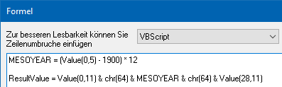
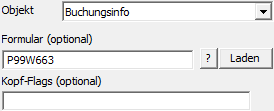
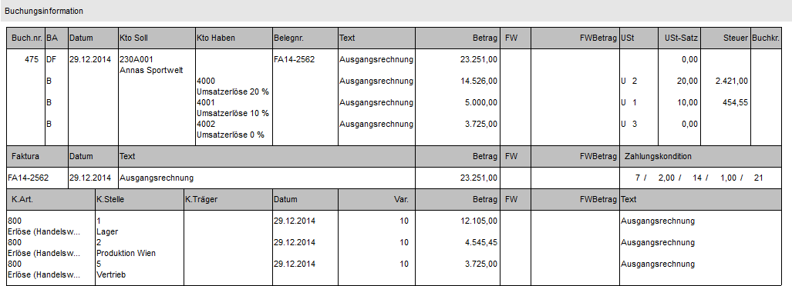

Externes Objekt - Typ "Objekt - Buchungsinfo"
Mit Hilfe des Objekts "Buchungsinfo" kann die Buchungsinformation einer Buchung ausgegeben werden. Welche Informationen dabei genau angedruckt werden sollen, wird über ein extra Formular gesteuert. Als Key dient der "Buchungskey" (d.h. Feld "Text" oder Bereich "View / Var" muss gefüllt sein).
Achtung
Der eindeutige Buchungskey bildet sich aus dem folgenden String:
ü MESOCOMP@MESOYEAR@Buchungsnummer
Dieser String steht in keiner Variable direkt zur Verfügung und muss mit Hilfe einer VB-Script-Formel automatisch erzeugt werden.
Beispiel

In der Formel sind die folgenden Elemente enthalten:
ü Value (0,11) => Mandantenkürzel
ü chr(64) => @-Zeichen
ü MESOYEAR => wird gebaut aus "(Wirtschaftsjahr - 1900) * 12"
ü chr(64) => @-Zeichen
ü Value (28,11) => Journalnummer
Die Formel setzt sich folgendermaßen zusammen:
ü Formel (VB Script)
MESOYEAR =
(Value(0,5) - 1900) * 12 'Das benötigte MESOYEAR
wird mathematisch über "Wirtschaftsjahr - 1900) * 12" gebaut und steht über die
Variable "MESOYEAR" zur Verfügung
ResultValue = Value(0,11)
& chr(64) & MESOYEAR & chr(64) & Value(28,11) 'Es wird der String aus MESOCOMP + @-Zeichen + MESOYEAR +
@-Zeichen + Buchungsnummer gebildet

Ø Formular (optional)
An dieser Stelle wird das Formular für den Andruck der
Buchungsinformation (Standardformular "P99W663") hinterlegt. Mit Hilfe des Icons
 kann die Formularliste geöffnet
werden, um nach einem Formular zu suchen. Zusätzlich besteht die Möglichkeit das
ausgewählte Formular mit Hilfe des Buttons
kann die Formularliste geöffnet
werden, um nach einem Formular zu suchen. Zusätzlich besteht die Möglichkeit das
ausgewählte Formular mit Hilfe des Buttons  direkt zu öffnen.
direkt zu öffnen.
Ø Kopf-Flags (optional)
Bei diesem Objekt werden keine Kopf-Flags unterstützt.
Beispiel - Externes Objekt mit dem Typ "Objekt" - Objekt "Buchungsinfo"
